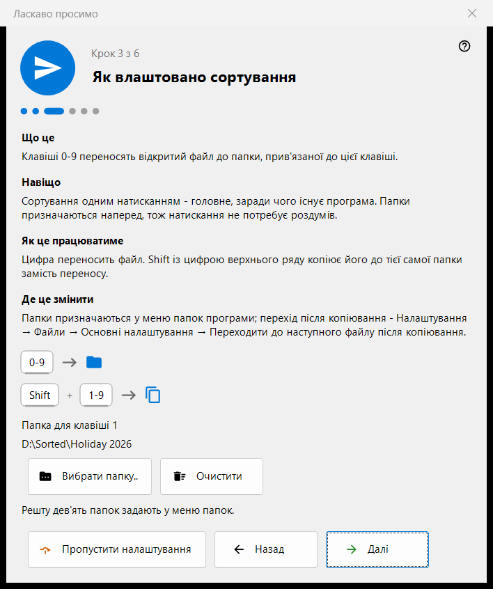
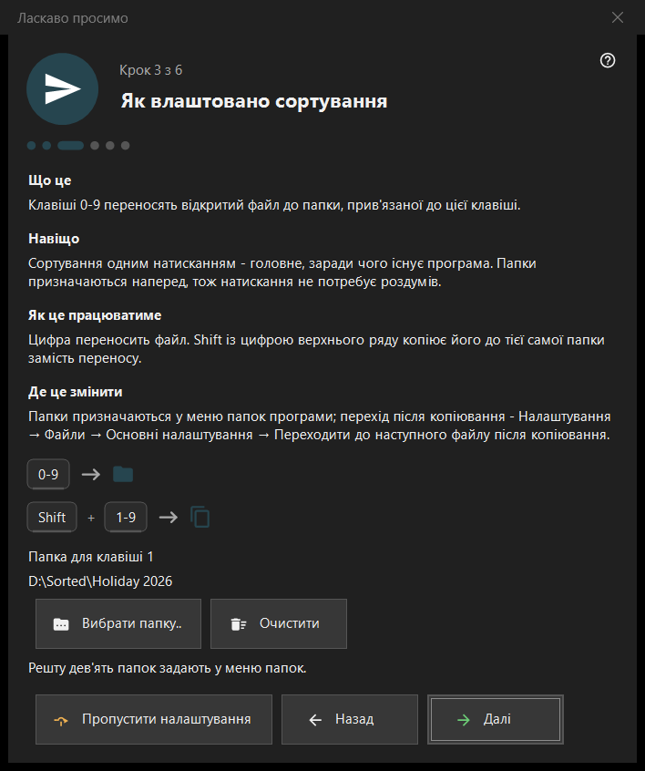

Ласкаво просимо
Ласкаво просимо
Призначення
Привітальні кроки за кілька хвилин налаштовують основне: мову, вигляд, теку для клавіші 1, видалення й зіставлення файлів. Вони відкриваються під час першого запуску, за кнопкою «Початкове налаштування» на порожньому екрані перегляду та за параметром «Показати привітальні кроки знову» на сторінці «Загальні» налаштувань. Кроки є лише в 64-розрядній версії.


Порядок дій
- Виберіть мову.
- Виберіть фонову схему та дію колеса.
- Виберіть теку для клавіші 1.
- Прочитайте, як працює видалення.
- Задайте зіставлення файлів.
- Перевірте підсумок і натисніть «Готово». Кнопка «Далі» веде далі, «Назад» повертає, «Пропустити налаштування» переходить до останнього кроку.
Елементи вікна
Мова інтерфейсу
Вікно змінює мову одразу, як попередній перегляд; переглядач приймає її лише після «Далі». Якщо закрити вікно без цього, мова переглядача лишається попередньою.
Вигляд
Виберіть фонову схему області зображення (За кутом, Чорний, Білий, За краєм, За верхом, За низом) і дію колеса: або воно масштабує в точці курсора, а гортають стрілками, або гортає файли, а масштаб - Ctrl+колесо. Обидва вибори можна змінити пізніше на сторінці «Зображення» налаштувань.
Як влаштовано сортування
Цифри 0-9 переносять поточний файл до теки; Shift і цифра верхнього ряду копіюють його. Теку для клавіші 1 вибирає кнопка «Вибрати папку..»; решта дев'ять задаються пізніше на сторінці «Отримувачі» налаштувань. Якщо тека зникла, крок повідомляє: «Тека більше недоступна. Оберіть іншу.»
Безпечне видалення
Показує, як працюють Del (до Кошика) і Shift+Del (остаточно). Параметри видалення розташовані на сторінці «Файли» налаштувань.
Відкривати зображення тут
Дає змогу відкривати зображення та відео з Провідника цією програмою. Крок з'являється, лише якщо програму встановлено не як пакет Microsoft Store; зіставлення діє для вашого облікового запису й не потребує прав адміністратора.
Усе готово
У підсумку вказано всі налаштування, їхні значення та місця, де їх можна змінити. Якщо на цьому ПК встановлено серверні компоненти, блок «Сервери на цьому ПК» показує кожен зі статусом і кнопкою «Відкрити менеджер»; якщо нічого не встановлено, блок прихований.
Частини кроку
У кожного кроку чотири частини: «Що це», «Навіщо», «Як це працюватиме» і «Де це змінити».